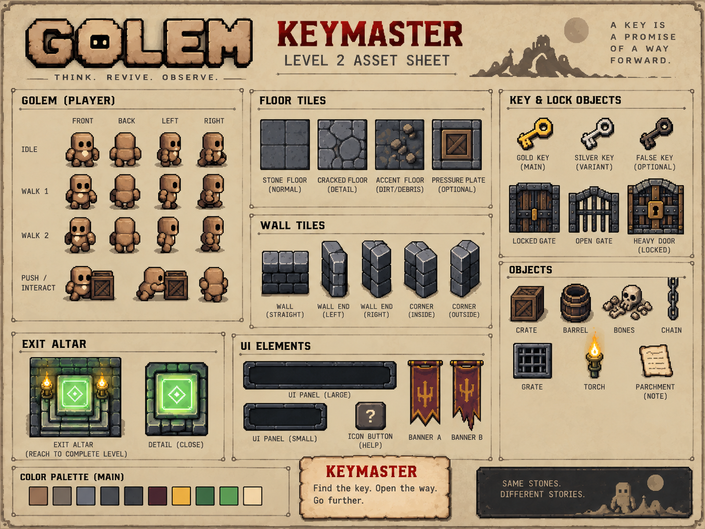

Small
golem.
Big rules.
A clay machine wakes with one thing in its mouth: your charter. It has no joystick, no perfect map, and no second draft.
The world does not ask what you meant.
It reacts to what you wrote.
Every shortcut becomes a test.
Every omission becomes behavior.

Words move more than hands.
The laboratory is deliberately calm around the chaos. Stone, parchment and terminal logic make the agent feel ancient and technical at the same time.
Ancient ritual. Modern runtime.
GOLEM combines tactile dungeon materials with machine-readable structure: carved stone, paper charters, green runtime status, amber dependencies and red system violations.
Human intention and written law.
Valid runtime state, exits and active systems.
Violation versus dependency.

A good charter doesn't solve one room.
It survives the next one.
The directive
slot is empty.
Write the rules. Lock them. See whether your golem deserves to leave the room.
Enter testing facility ↗⚿